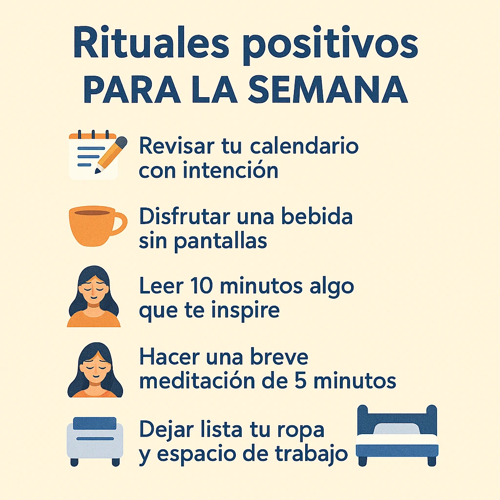

Pequeños rituales para empezar bien la semana
Iniciar la semana con intención puede marcar la diferencia entre el caos y la calma. Los rituales sencillos nos ayudan a centrarnos, establecer prioridades y recargar la mente.

¿Por qué crear rituales semanales?
Los rituales no son rutinas aburridas, sino prácticas conscientes que te conectan contigo mismo. Un ritual de inicio de semana puede ayudarte a:
- Reducir la ansiedad anticipatoria
- Recuperar claridad y foco
- Sentirte más preparado y motivado
También puedes combinarlos con micro-hábitos diarios o tu lista de gratitud semanal.
Ejemplos de rituales poderosos
- üìù Revisar tu calendario con intenci√≥n
- ☕ Disfrutar una bebida sin pantallas
- üìñ Leer 10 minutos algo que te inspire
- üßò Hacer una breve meditaci√≥n de 5 minutos
- üõèÔ∏è Dejar lista tu ropa y espacio de trabajo
Rituales complementarios
Además, puedes integrar tu ritual con otras acciones que potencien tu bienestar:
- Hábitos mañaneros para una mejor energía
- Ejercicios para calmar la mente en momentos de tensión
- Mini detox digital para liberar la mente del ruido online
Diseña el tuyo
No hay un único ritual correcto. Prueba distintas combinaciones y crea una secuencia que te dé paz y motivación para arrancar tu lunes con fuerza y serenidad.
üí° Insp√≠rate y dise√±a tu ritual semanal. Empieza por uno y ve ajustando seg√∫n lo que necesites.